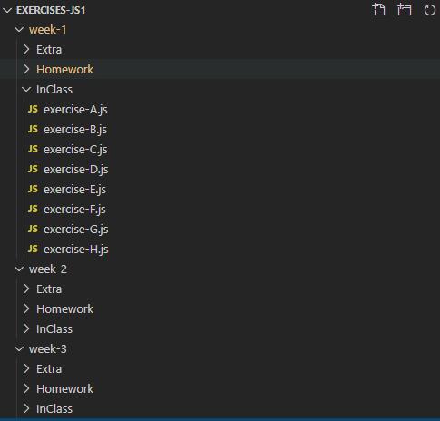

Mentors Guide
Index
Introduction
At MigraCode we believe, as we have always done, that finding professional programmers to deliver our course best prepares our students for professional life by giving them the most up to date knowledge and helping them build a network of developers for when they graduate.
In teachtogether.tech, you will find practical information to teach how to code.
Basic information about our classes that instructors should know:
Main instructors
- Lessons structure
- Check that you know the module and lessons structure
- You know how to manage the exercises repositories on Github
- Lessons contents and materials
- You checked the Notes and extra materials for each lesson
- You know what tools are using the students
- Only for online classes, you read the Online classes manual
Supporting instructors
Basic information that supporting instructors should know:
- Check that you know the module and lessons structure
- You know what tools are using the students
- Only for online classes, you read the Online classes manual
General information
Module Structure
Each module has 3 weeks lessons, and each lesson is divided as follows:
- Weekday (4h): explain topics through materials syllabus and presentations and coding, in every topic there are one or more exercises that you would give time to the students to do it, later you can show how to solve it
- Homework (20h): exercises students should complete between the Weekday and the Weekend to practice the new content. As a instructor you don't have to do anything, the Migracode's Education Team will help and push the students to have all exercises finished before the Weekend.
- Weekend (4h): is a day to practice, at the beginning we would do a recap and check together the homework, after it and with support, they have to do the exercises by their own. The instructor can stop the class to explain a common doubt or solve exercises together. But it is important to let them think and cope the exercises, to not always just copy what the mentor is writing.
Example of a lesson structure
[Class name]
What we will learn today?
- Topic 1
- Topic 2
- Topic 3
Topic 1
High level explanation of Topic 1 - rely on the exercises
Exercise A (10 min) exercises students should do during the class
Topic 2
Exercise B (10 min)
Topic 3
Exercise C (10 min)
Resources
Homework
common tasks send as homework
- Review and finish all exercises in the folder week-1/InClass
- Complete all of the exercises in the folder week-1/Homework
- Push the changes to your repository in Github
- Complete the Homework Form, to notify mentors and add comments and questions about the exercises
Practice Day (Saturday)
common tasks to do on Saturday
- Check together, solve doubts and fix the Homework exercises
- List of exercises depends on the week
- [Optional] Complete the exercises in the folder week-2/Extra
- Push the changes to your repository in Github
Exercises Repositories in Github
All the exercises students should complete during the class, as homework and on saturday, are all inside a GitHub repository that they fork and clone every module. The structure is as follows:

- For each week of the module we have a folder with the week number week-1
- Inside each week folder, we can find 3 folders:
- InClass: exercises they should complete during the class
- Homework: exercises they should complete after the class and before Saturday
- Extra: optional exercises students can complete when they want
- See a repository example
Tools that we use
As a mentor you can use the O.S. that you have, or you can use other tools not listed taking into account to not confuse students
- Ubuntu: most students have Ubuntu, but there are some students with Mac or Windows
- Visual Code: is the IDE we use for all the languages during the course
- Git: all the students have a GitHub account and push their exercises always using the Terminal
- Node: is the tool we use to execute by command line scripts without UI
- NPM: to install modules and to execute Web Servers
- Chrome: Browser we normally use, and we teach how to use the inspector
- PostreSQL
- DBeaver: as an SQL client with UI
Know your students
To see the students progress ask for access in the files
Feedback & Contributing
Under construction: for now any feedback or contribution is completely welcome, just email to carlos@migracode.org or send a Slack message There are discussions about each module and every class in a module, make sure to go through them (or add a new issue/discussion point).